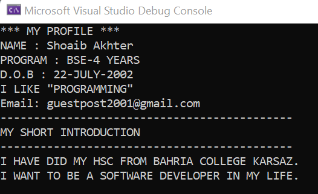
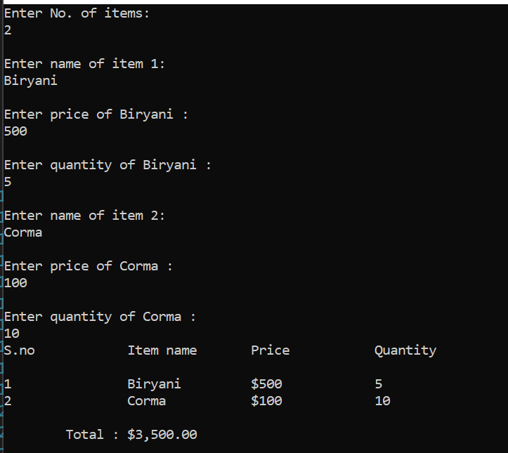

Tasks & Solution of C# Language
1. Introduction to Basic Programming Language
1) Write a Program to print your Profile using C#.
Output:

Source Code:
Console.WriteLine("*** MY PROFILE *** ");
Console.WriteLine("NAME : Shoaib Akhter");
Console.WriteLine("PROGRAM : BSE-4 YEARS");
Console.WriteLine("D.O.B : 22-JULY-2002");
Console.WriteLine("I LIKE \"PROGRAMMING\"");
Console.WriteLine("Email: guestpost2001@gmail.com");
Console.WriteLine("--------------------------------------------");
Console.WriteLine("MY SHORT INTRODUCTION");
Console.WriteLine("--------------------------------------------");
Console.WriteLine("I HAVE DID MY HSC FROM BAHRIA COLLEGE KARSAZ.\nI WANT TO BE A SOFTWARE DEVELOPER IN MY LIFE. ");
2) Write a program to display your personal information. (Name, age, address, father’s name,
college name, NIC, phone number etc. ) and display your marks sheet. (Use Escape Sequences to create a
formatted Output according to the given image).
Output:
Source Code:
Console.WriteLine("\t\t __________PERSONAL INFORMATION_________ ");
Console.WriteLine("\t\t|FIRST NAME = Shoaib\t\t\t|");
Console.WriteLine("\t\t|LAST NAME = Akhter\t\t\t|");
Console.WriteLine("\t\t|FATHER NAME= Bahadur\t\t\t|");
Console.WriteLine("\t\t|AGE= 19\t\t\t\t|");
Console.WriteLine("\t\t|EMAIL ID = guestpost2001@gmail.com\t|");
Console.WriteLine("\t\t|PHONE NUMBER = 031454541215463\t\t|");
Console.WriteLine("\t\t|EDUCATION = BSE(SOFTWARE)\t\t|");
Console.WriteLine("\t\t|________________
_______________________|");
2. Variables & Arithmetic Operations
1) Write a program to display your personal information and display your mark sheet. Use escape sequence to create a formatted output.
Output:
Source Code:
Console.WriteLine("______PERSONAL INSFORMATION______\n|First Name: Shoaib \t\t|\n|Last Name: Akhter \t\t|\n|Father Name: Ali \t\t|\n|Age: 19\t\t\t|\n|Email Id: guest@gmail.com\t|\n|Phone Number: +9254635181\t|\n|Education: Intermediate\t|\n---------------------------------\n\n\n");
Console.WriteLine("__________My Marksheet___________\n|\t\t\t\t|\n|Subject\t
Total\tObtained|\n|English\t100\t72\t|\n|Urdu
\t\t100\t80\t|\n|Pst\t\t100\t75\t|\n|Islamyat
\t100\t82\t|\n|Maths\t\t100\t86\t|\n|Computer
\t100\t90\t|\n|Physics\t100\t88\t|\n|Chemistry
\t100\t79\t|\n|\t\t\t\t|\n|%Percentage Obtained\t81.5%\t|");
2) Write a C# program that displays the results of the following expressions:
1. 3.0*5.0
2. 7.1*8.3-2.2
3. 3.2/(6.1*5)
4. 15/4
5. 15%4
6. 5*3-(6*4)
.
Output:
Source Code:
float eq1, eq2, eq3, eq4, eq5, eq6;
Console.WriteLine("Equation 1 is : 3.0*5.0 ");
eq1 = Convert.ToSingle(3.0F * 5.0F);
Console.WriteLine("{0:0.00}", eq1);
Console.WriteLine("Equation 2 is : 7.1*8.3-2.2 ");
eq2 = Convert.ToSingle(7.1F * 8.3F - 2.2F);
Console.WriteLine("{0:0.00}", eq2);
Console.WriteLine("Equation 3 is : 3.2/(6.1*5) ");
eq3 = Convert.ToSingle(3.2F / (6.1F * 5.0F));
Console.WriteLine("{0:0.00}", eq3);
Console.WriteLine("Equation 4 is : 15/4 ");
eq4 = Convert.ToSingle(15.0F / 4.0F);
Console.WriteLine("{0:0.00}", eq4);
Console.WriteLine("Equation 5 is : 15%4 ");
eq5 = Convert.ToSingle(15.0F % 4.0F);
Console.WriteLine("{0:0.00}", eq5);
Console.WriteLine("Equation 6 is : 5*3-(6*4) ");
eq6 = Convert.ToSingle(5.0F * 3.0F - (6.0F * 4.0F));
Console.WriteLine("{0:0.00}", eq6);
3) Calculate the temperature in Celsius using integer values.
Output:

Source Code:
double fahrenheit, celsius, eq1;
Console.WriteLine("Enter Temprature in Fahrenheit : ");
fahrenheit = Convert.ToSingle(Console.ReadLine());
celsius = Convert.ToSingle((fahrenheit - 32) * 5 / 9);
Console.WriteLine("Temprature in Celsius = {0:0.00}", celsius);
4) Calculate area of Circle.
Output:
Source Code:
double area, radius;
Console.WriteLine("Enter Radius of a Circle : ");
radius = Convert.ToSingle(Console.ReadLine());
Console.WriteLine("Formula To Calculate Area of Circle = 2πR² ");
area = 2 * Math.PI * Math.Pow(radius, 2);
Console.WriteLine("The Area of Circle : {0:0.00}", area);
5) Display result of expression: ((( a+b)*(c*d*e))-e)/f.
Output:
Source Code:
double a, b, c, d, e, f, equation;
Console.WriteLine("EQUATION IS = (((a + b) * (c * e * d)) - e) / f");
Console.WriteLine("Enter the Value of a : ");
a = Convert.ToSingle(Console.ReadLine());
Console.WriteLine("Enter the Value of b : ");
b = Convert.ToSingle(Console.ReadLine());
Console.WriteLine("Enter the Value of c : ");
c = Convert.ToSingle(Console.ReadLine());
Console.WriteLine("Enter the Value of d : ");
d = Convert.ToSingle(Console.ReadLine());
Console.WriteLine("Enter the Value of e : ");
e = Convert.ToSingle(Console.ReadLine());
Console.WriteLine("Enter the Value of f : ");
f = Convert.ToSingle(Console.ReadLine());
equation = Convert.ToSingle((((a + b) * (c * e * d)) - e) / f);
Console.WriteLine("Solution of Equation : {0:0.00}", equation);
6) Write a program and print the output of first equation of motion. For values take input from user. (Vf = Vi = at).
Output:

Source Code:
double vf, vi, a, t;
Console.WriteLine("FIRST EQUATION OF MOTION IS : vf = vi + at");
Console.Write("Enter Initial Velocity : ");
vi = Convert.ToSingle(Console.ReadLine());
Console.Write("Enter Acceleration : ");
a = Convert.ToSingle(Console.ReadLine());
Console.Write("Enter Time(in Seconds) : ");
t = Convert.ToSingle(Console.ReadLine());
vf = Convert.ToSingle(vi + (a * t));
Console.WriteLine("The Final Velocity is = {0:0.00}", vf);
7) Write a program that takes personal information from user and displays is.
Output:
Source Code:
string name, fathername, age, martialstatus, city, email, phone, profession, degree,
university;
Console.Write("Enter Your Name : ");
name = Console.ReadLine();
Console.Write("Enter Your Father's Name : ");
fathername = Console.ReadLine();
Console.Write("Enter Your Age : ");
age = Console.ReadLine();
Console.Write("Enter Your Martial Status : ");
martialstatus = Console.ReadLine();
Console.Write("Where Do You Live : ");
city = Console.ReadLine();
Console.Write("Enter Your Email Address : ");
email = Console.ReadLine();
Console.Write("Enter Your Enter Your Phone Number : ");
phone = Console.ReadLine();
Console.Write("Enter Your Profession : ");
profession = Console.ReadLine();
Console.Write("Enter Your 4 Year Degree Program : ");
degree = Console.ReadLine();
Console.Write("Enter Your University : ");
university = Console.ReadLine();
Console.WriteLine("\nTHANKS FOR PROVIDING INFORMATION\n");
Console.WriteLine("\t\t********************* Your Profile *********************\n");
Console.Write("\t\tName : {0}" +
"\n\t\tFather's Name : {1}" +
"\n\t\tAge : {2}" +
"\n\t\tMartial Status : {3}" +
"\n\t\tCity : {4}" +
"\n\t\tEmail : {5}" +
"\n\t\tPhone Number : {6}" +
"\n\t\tProfession : {7}" +
"\n\t\tDegree : {8}" +
"\n\t\tUniversity : {9}\n",
name, fathername, age, martialstatus, city, email, phone, profession, degree, university);
Console.WriteLine("\t\t_______________
____________________________
_____________");
3. Formatted Output
1) Create a small form which take employee information of a Company.
Output:
Source Code:
int salary;
string name, fname, phone, dsgn, DOH;
Console.Write("Enter Your Name : ");
name = Console.ReadLine();
Console.Write("Enter Your Father's Name : ");
fname = Console.ReadLine();
Console.Write("Enter Your Phone Number : ");
phone = Console.ReadLine();
Console.Write("Enter Your Designation : ");
dsgn = Console.ReadLine();
Console.Write("Enter Your Date Of Hiring : ");
DOH = Console.ReadLine();
Console.Write("Enter Your Salary : ");
salary = Convert.ToInt32(Console.ReadLine());
Console.Clear();
Console.WriteLine(" __________________________
_____________________");
Console.WriteLine("| EMPLOYEE DATA \t\t\t\t|");
Console.WriteLine("|-----------------------------------------------|");
Console.WriteLine("| NAME : {0}\t\t\t\t\t|", name);
Console.WriteLine("| FATHER's NAME : {0}\t\t\t\t|", fname);
Console.WriteLine("| PHONE NUMBER : {0}\t\t\t|", phone);
Console.WriteLine("| DESIGNATION : {0}\t\t\t\t|", dsgn);
Console.WriteLine("| DATE OF HIRE : {0}\t\t\t\t|", DOH);
Console.WriteLine("| SALARY : {0:0,0}\t\t\t\t|", salary);
Console.WriteLine("|_____________________
__________________________|");
2) Create a C# program in which you will display a restaurants payment bill in a formatted manner with input from user.
Output:
Source Code:
DateTime DT = DateTime.Now;
string firstdish, seconddish;
double table, guest, price1, price2, q1, q2, sub, tax, total, grat;
Console.Write("Enter Table Number : ");
table = Convert.ToInt32(Console.ReadLine());
Console.Write("Number of Guests : ");
guest = Convert.ToInt32(Console.ReadLine());
Console.Write("Enter 1st Dish : ");
firstdish = Console.ReadLine();
Console.Write("Enter price : ");
price1 = Convert.ToSingle(Console.ReadLine());
Console.Write("Enter Quantity : ");
q1 = Convert.ToSingle(Console.ReadLine());
Console.Write("Enter 2nd Dish : ");
seconddish = Console.ReadLine();
Console.Write("Enter price : ");
price2 = Convert.ToSingle(Console.ReadLine());
Console.Write("Enter Quantity : ");
q2 = Convert.ToSingle(Console.ReadLine());
price1 = Convert.ToSingle(q1 * price1);
price2 = Convert.ToSingle(q2 * price2);
sub = Convert.ToSingle(price1 + price2);
tax = Convert.ToSingle(sub * 0.10);
grat = Convert.ToSingle(6.00);
total = Convert.ToSingle(sub + tax + grat);
Console.Clear();
Console.WriteLine("\t\t _________________________
______________");
Console.WriteLine("\t\t| \t\t\t\t\t|");
Console.WriteLine("\t\t| BAHRIA UNIVERSITY RESTAURANT \t\t|");
Console.WriteLine("\t\t| Bahria University Karachi Campus \t|");
Console.WriteLine("\t\t| \t\t\t\t\t|");
Console.WriteLine("\t\t| \t\t\t\t\t|");
Console.WriteLine("\t\t| {0:dd-MMM-yyyy} {1:HH:mm:ss} \t\t\t|", DT, DT);
Console.WriteLine("\t\t|---------------------------------------|");
Console.WriteLine("\t\t| Table:{0} Chk: #{1} Guest: {2} \t\t|", table, table, guest);
Console.WriteLine("\t\t|---------------------------------------|");
Console.WriteLine("\t\t| \t\t\t\t\t|");
Console.WriteLine("\t\t| \t\t\t\t\t|");
Console.WriteLine("\t\t| {0} {1} $ {2:0.00}\t\t\t|", q1, firstdish, price1);
Console.WriteLine("\t\t| {0} {1} $ {2:0.00}\t\t\t|", q2, seconddish, price2);
Console.WriteLine("\t\t| \t\t\t\t\t|");
Console.WriteLine("\t\t| \t\t\t\t\t|");
Console.WriteLine("\t\t| SUBTOTAL $ {0:0.00}\t\t\t|", sub);
Console.WriteLine("\t\t| TAX $ {0:0.00}\t\t\t\t|", tax);
Console.WriteLine("\t\t| GRATUITY $ {0:0.00}\t\t\t|", grat);
Console.WriteLine("\t\t| TOTAL DUE $ {0:0.00}\t\t\t|", total);
Console.WriteLine("\t\t| \t\t\t\t\t|");
Console.WriteLine("\t\t| \t\t\t\t\t|");
Console.WriteLine("\t\t| \t\t\t\t\t|");
Console.WriteLine("\t\t| THANK YOU FOR DINING WITH US \t\t|");
Console.WriteLine("\t\t| PLEASE COME AGAIN \t\t\t|");
Console.WriteLine("\t\t| \t\t\t\t\t|");
Console.WriteLine("\t\t|_________________
______________________|");
4. Operators & Expression
1) Which of the following values can be assigned to variables of type float, double and decimal: 5, -5.01, 34.567839023; 12.345; 8923.1234857; 3456.091124875956542151256683467?.
Output:
Source Code:
decimal g = 3456.091124875956542151256683467M;
double a = 5, b = -5.01, c = 34.567839023, d = 12.345, e = 8923.1234857, f =
3456.091124875956542151256683467;
Console.WriteLine("Value of a = " + a + "\t\t\t\t\t(It is Stored in Double)");
Console.WriteLine("Value of b = " + b + "\t\t\t\t(It is Stored in Double)");
Console.WriteLine("Value of c = " + c + "\t\t\t(It is Stored in Double)");
Console.WriteLine("Value of d = " + d + "\t\t\t\t(It is Stored in Double)");
Console.WriteLine("Value of e = " + e + "\t\t\t(It is Stored in Double)");
Console.WriteLine("Value of f = " + f + "\t\t\t(It is Stored in Double But its Round off value)");
Console.WriteLine("If We Store Value of f in Decimal ");
Console.WriteLine("Value of f = " + g + "\t(Its Stored in Decimal But its again a Round off value");
2) Create a simple calculator which will perform all arithmetical, Bit wise operation and logical operation on two number.
Output:
Source Code:
int num1, num2;
bool x, y;
Console.WriteLine("Enter First Number : ");
num1 = Convert.ToInt32(Console.ReadLine());
Console.WriteLine("Enter Second Number : ");
num2 = Convert.ToInt32(Console.ReadLine());
Console.WriteLine("******************ARITHMETIC
******************\n");
Console.WriteLine("{0} + {1} = {2}", num1, num2, num1 + num2);
Console.WriteLine("{0} + {1} = {2}", num1, num2, num1 + num2++);
Console.WriteLine("{0} - {1} = {2}", num1, num2, num1 - num2--);
Console.WriteLine("{0} - {1} = {2}", num1, num2, num1 - num2);
Console.WriteLine("{0} * {1} = {2}", num1, num2, num1 * num2);
Console.WriteLine("{0} / {1} = {2}", num1, num2, num1 / num2);
Console.WriteLine("{0} % {1} = {2}\n", num1, num2, num1 % num2);
Console.WriteLine("******************COMPARISON
******************\n");
Console.WriteLine("{0} > {1} = {2}", num1, num2, num1 > num2);
Console.WriteLine("{0} < {1} = {2}", num1, num2, num1 < num2);
Console.WriteLine("{0} >= {1} = {2}", num1, num2, num1 >= num2);
Console.WriteLine("{0} <= {1} = {2}", num1, num2, num1 <= num2);
Console.WriteLine("{0} == {1} = {2}", num1, num2, num1 == num2);
Console.WriteLine("{0} != {1} = {2}", num1, num2, num1 != num2);
Console.WriteLine("{0} & {1} = {2}", num1, num2, num1 & num2);
Console.WriteLine("{0} | {1} = {2}", num1, num2, num1 | num2);
Console.WriteLine("{0}^2 = {1}", num2, num2 ^ 2);
Console.WriteLine("{0} << {1} = {2}", num1, num2, num1 << num2);
Console.WriteLine("{0} >> {1} = {2}", num1, num2, num1 >> num2);
Console.WriteLine("{0} != {1}", num2, num2!);
Console.WriteLine("_____________________
_________________________\n");
Console.WriteLine("Enter First Value : ");
x = Convert.ToBoolean(Console.ReadLine());
Console.WriteLine("Enter Second Value : ");
y = Convert.ToBoolean(Console.ReadLine());
Console.WriteLine("*******************LOGICAL
*******************\n");
Console.WriteLine("{0} && {1}= {0}", x, y, x && y);
Console.WriteLine("{0} || {1}= {0}", x, y, x || y);
Console.WriteLine("!{0}= {0}", y, !y);
Console.WriteLine("{0} ^ {1}= {0}", x, y, x ^ y);
Console.WriteLine("_______________________
________________________");
3) Create a simple program to calculate Hypotenuse using Pythagoras theorem c^2 = (a^2 + b^2).
Output:
Source Code:
double a, b, a2, b2, c2, ptheorem;
Console.Write("Enter Value of A : ");
a = Convert.ToDouble(Console.ReadLine());
Console.Write("Enter Value of B : ");
b = Convert.ToDouble(Console.ReadLine());
a2 = Convert.ToDouble(Math.Pow(a, 2));
b2 = Convert.ToDouble(Math.Pow(b, 2));
c2 = a2 + b2;
Console.WriteLine("\nc^2 = a^2 + b^2");
Console.WriteLine("\nc^2 = ({0:0.00} + {1:0.00})", a2, b2);
Console.WriteLine("\nc^2 = {0:0.00}", c2);
ptheorem = Math.Sqrt(c2);
Console.WriteLine("\nc = {0:0.00}", ptheorem);
5. Conditional Statements
1) Create a simple program to check whether the no is even or odd.
Output:
Source Code:
int num;
Console.WriteLine("Enter a Number : ");
num = Convert.ToInt32(Console.ReadLine());
if (num % 2 == 0)
{
Console.WriteLine("It is even number");
}
else
{
Console.WriteLine("It is odd number");
}
2) Create a simple calculator using if else condition in which you will take two number as input and ask user which operation he/she wants to perform.
Output:
Source Code:
double op1, op2;
Console.Write("Enter 1st Operand :");
op1 = Convert.ToDouble(Console.ReadLine());
Console.Write("Enter 2nd Operand :");
op2 = Convert.ToDouble(Console.ReadLine());
Console.Write("Enter Operator :");
string Operator = Console.ReadLine();
switch (Operator)
{
case "+":
double addition;
Console.WriteLine("*****ADDITION*****");
addition = op1 + op2;
Console.WriteLine("{0} + {1} = {2}", op1, op2, addition);
break;
case "-":
double subtraction;
Console.WriteLine("*****SUBTRACTION*****");
subtraction = op1 - op2;
Console.WriteLine("{0} - {1} = {2}", op1, op2, subtraction);
break;
case "*":
double multiplication;
Console.WriteLine("*****MULTIPLICATION*****");
multiplication = op1 * op2;
Console.WriteLine("{0} * {1} = {2}", op1, op2, multiplication);
break;
case "/":
double division;
Console.WriteLine("*****DIVISION*****");
division = op1 / op2;
Console.WriteLine("{0} / {1} = {2}", op1, op2, division);
break;
case "%":
double modulus;
Console.WriteLine("*****MODULUS*****");
modulus = op1 % op2;
Console.WriteLine("{0} % {1} = {2}", op1, op2, modulus);
break;
}
3) Write a Program using nested to create a game.
Output:
Source Code:
string response;
Console.WriteLine("*****GUESSING THE SECRET NUMBER*****");
Console.Write("DO YOU WANT TO PLAY (y/n) : ");
response = Console.ReadLine();
if (response == "y" || response == "Y" || response == "yes" || response == "YES"){
int age;
Console.Write("Enter Your Age : ");
age = Convert.ToInt32(Console.ReadLine());
if (age < 6){
Console.WriteLine("YOU ARE TOO YOUNGER TO PLAY");}
else{
int secretnum = 1786, guessednum;
Console.Write("Enter Any 4 Digit Number : ");
guessednum = Convert.ToInt32(Console.ReadLine());
if (guessednum == secretnum){
Console.WriteLine("CONGRATULATIONS! YOU ARE SUCCESSFUL");}
else{
string again;
Console.WriteLine("BETTER LUCK NEXT TIME");}}}
else if (response == "n" || response == "N" || response == "no" || response == "NO"){
Console.WriteLine("THANK YOU! YOU MAY GO");}
else{
Console.WriteLine("Enter a Valid Input");}
4) Create simple application which will check the vowel using switch case.
Output:
Source Code:
string alphabet;
Console.WriteLine("Enter an Alphabet : ");
alphabet = Console.ReadLine();
if (alphabet == "a" || alphabet == "A"){
Console.WriteLine("ITS A VOWEL");}
else if (alphabet == "e" || alphabet == "E"){
Console.WriteLine("ITS A VOWEL");}
else if (alphabet == "i" || alphabet == "I"){
Console.WriteLine("ITS A VOWEL");}
else if (alphabet == "o" || alphabet == "O"){
Console.WriteLine("ITS A VOWEL");}
else if (alphabet == "u" || alphabet == "U"){
Console.WriteLine("It is a vowel");}
else{
Console.WriteLine("It is not a vowel");}
6. For Loops
1) Enter Cube series without using power maths function.
Output:

Source Code:
int num, i;
Console.Write("Enter Range: ");
num = Convert.ToInt32(Console.ReadLine());
for (i = 1; i <= num; i++){
Console.WriteLine("\tCube of {0} is {1}", i, i * i * i);}
2) Square Series without using power maths function.
Output:
Source Code:
int num, i;
Console.Write("Enter Range : ");
num = Convert.ToInt32(Console.ReadLine());
for (i = 1; i <= num; i++){
Console.WriteLine("\tCube of {0} is {1}", i, i * i * i);}
3) Repeatedly print the value of the variable xValue, decreasing it by 0.5 each time, as long as xValue remains positive.
Output:
Source Code:
double num = 0;
int i, z;
Console.Write("Enter any Negative Number : ");
num = Convert.ToDouble(Console.ReadLine());
for (z = 1, i = (int)num; num <= 0; num += 0.5){
Console.WriteLine("\t{0}\t=\t{1}", z, num);
z++;}
4) Print the square roots of the first 25 odd positive integers.
Output:
Source Code:
int z, i;
for (z = 1, i = 1; z <= 25; z++, i += 2){
Console.WriteLine("\t{0})\t{1} \t=\t {2:0.00}", z, i, Math.Sqrt(i));}
5) Generate Stars right angle triangle using 2 for loops.
Output:
Source Code:
for (int row = 0; row < 10; row++){
for (int col = 0; col < row; col++){
Console.Write("* ");}
Console.Write("\n");}
6) Write a program that reads from the console a positive integer number N (N < 20) and prints a matrix of number.
Output:
Source Code:
int startnum, endnum;
Console.Write("Enter Starting Number : ");
startnum = Convert.ToInt32(Console.ReadLine());
Console.Write("Enter Ending Number : ");
endnum = Convert.ToInt32(Console.ReadLine());
Console.WriteLine("\n");
for (int row = startnum; row <= endnum; row++){
for (int col = row; col <= (row - 1) + endnum; col++){
Console.Write("{0}\t", col);}
Console.Write("\n\n");}
7. While Loops
1) Fibonacci series ( 0,1,1,2,3,5,8…) for and while loop.
Output:
Source Code:
int i = 3;
double num, x = 0, y = 1, z = 0;
Console.Write("Enter Number of Terms : ");
num = Convert.ToDouble(Console.ReadLine());
Console.Write("\n\n{0}, {1},", x, y);
while (i <= num){
z = x + y;
Console.Write(" {0},", z);
x = y;
y = z;
i++;}
Console.WriteLine("\n\n");
Console.WriteLine("THANK YOU");
2) Repeatedly print the value of the variable xValue, decreasing it by 0.5 each time, as long as xValue remains positive. (while loop).
Output:
Source Code:
double num = 0;
int z = 1;
Console.Write("Enter any Positive Number : ");
num = Convert.ToDouble(Console.ReadLine());
while (num >= 0){
Console.WriteLine("\t{0}\t=\t{1}", z, num);
z++;
num -= 0.5;}
3) Print the square roots of the first 25 odd positive integers. (while loop).
Source Code:
int z = 1, i = 1, sum = 0;
Console.WriteLine("\t\t ___________________________
____________________________");
Console.WriteLine("\t\t| Serial Odd Number Square Root \t\t\t|");
while (z <= 25){
Console.WriteLine("\t\t|\t{0} \t=\t {1} \t=\t {2:0.00}\t\t|", z, i, Math.Sqrt(i));
sum += i;
i += 2;
z++;}
z--;
Console.WriteLine("\t\t| \t\t\t\t\t\t\t|");
Console.WriteLine("\t\t|\tTotal Sum of {0} Odd Positive Integers is {1}\t|", z, sum);
Console.WriteLine("\t\t|____________________
___________________________________|");
8. Arrays
1) Write a program, which creates an array of 20 elements of type integer and initializes each of the elements with a value equals to the index of the element multiplied by 5. Print the elements to the console.
Output:
Source Code:
int[] array1 = new int[21];
Console.WriteLine("\t_________________");
for (int i = 1; i <= 20; i++){
array1[i] = i;
Console.WriteLine("\t|\t{0}\t|", array1[i] * 5);}
Console.WriteLine("\t|_______________|");
2) Make a program in C# in which take 5 numbers from user and then give sum and avg. of them. Using arrays.
Output:
Source Code:
int sum = 0, average = 0;
int[] numbers = new int[5];
for (int i = 0; i < 5; i++){
Console.Write("Enter {0} Number : ", i + 1);
numbers[i] = Convert.ToInt32(Console.ReadLine());
sum += numbers[i];}
average = sum / 5;
Console.WriteLine("Sum of Given Numbers is {0} ", sum);
Console.WriteLine("Average of Given Numbers is {0}", average);
9. 2-D Arrays
1) Enter the first matrix and then display it. Secondly, enter the second matrix and then display it. In the result by apply 2D arrays show Addition, subtraction of 2 matrixes.
Output:
Source Code:
int[,] mat1 = new int[3, 3];
int[,] mat2 = new int[3, 3];
Console.WriteLine("Enter Matrix 1:");
for (int x = 0; x < 3; x++){
for (int y = 0; y < 3; y++){
mat1[x, y] = int.Parse(Console.ReadLine());}}
Console.WriteLine("\nEnter Matrix 2:");
for (int x = 0; x < 3; x++){
for (int y = 0; y < 3; y++){
mat2[x, y] = int.Parse(Console.ReadLine());}}
Console.Clear();
Console.WriteLine("Matrix 1:\n");
for (int x = 0; x < 3; x++){
for (int y = 0; y < 3; y++){
Console.Write("\t{0}", mat1[x, y]);}
Console.WriteLine();}
Console.WriteLine("\nMatrix 2:\n");
for (int x = 0; x < 3; x++){
for (int y = 0; y < 3; y++){
Console.Write("\t{0}", mat2[x, y]);}
Console.WriteLine();}
Console.WriteLine("\nAddition of Matrix:\n");
for (int x = 0; x < 3; x++){
for (int y = 0; y < 3; y++){
Console.Write("\t{0}", mat1[x, y] + mat2[x, y]);}
Console.WriteLine();}
Console.WriteLine("\nSubtraction of Matrix:\n");
for (int x = 0; x < 3; x++){
for (int y = 0; y < 3; y++){
Console.Write("\t{0}", mat1[x, y] - mat2[x, y]);}
Console.WriteLine();}
2) Take N number of user data input and make sure N is greater than 10, which contain name of the user, his/her nationality and his/her eye color. You have to show the max color of eye in each country.
Output:
Source Code:
int n = 0;
do{
Console.WriteLine("Enter the number of user you want to insert the data of:");
n = int.Parse(Console.ReadLine());}
while (n < 10);
string[,] data = new string[n, 3];
int[,] mec = { { 0, 0, 0 }, { 0, 0, 0 }, { 0, 0, 0 } };
for (int x = 0; x < n; x++){
Console.WriteLine("\nEnter Name:");
data[x, 0] = Console.ReadLine();
do{
Console.WriteLine("\nEnter nationality:\na)Pakistan\nb)China\nc)Iran");
data[x, 1] = Console.ReadLine();
if (data[x, 1] == "a" || data[x, 1] == "A" || data[x, 1] == "Pakistan" || data[x, 1] == "pakistan"){
data[x, 1] = "Pakistan";}
else if (data[x, 1] == "b" || data[x, 1] == "B" || data[x, 1] == "China" || data[x, 1] == "china"){
data[x, 1] = "China ";}
else if (data[x, 1] == "c" || data[x, 1] == "C" || data[x, 1] == "Iran" || data[x, 1] == "iran"){
data[x, 1] = "Iran ";}}
while (data[x, 1] != "Pakistan" && data[x, 1] != "Iran " && data[x, 1] != "China ");
do{
Console.WriteLine("\nEnter eye color:\na)Black\nb)Brown\nc)Blue");
data[x, 2] = Console.ReadLine();
if (data[x, 2] == "a" || data[x, 2] == "A" || data[x, 2] == "Black" || data[x, 2] == "black"){
data[x, 2] = "Black";}
else if (data[x, 2] == "b" || data[x, 2] == "B" || data[x, 2] == "Brown" || data[x, 2] == "brown"){
data[x, 2] = "Brown";}
else if (data[x, 2] == "c" || data[x, 2] == "C" || data[x, 2] == "Blue" || data[x, 2] == "blue"){
data[x, 2] = "Blue";}}
while (data[x, 2] != "Brown" && data[x, 2] != "Black" && data[x, 2] != "Blue");}
for (int x = 0; x < n; x++){
if (data[x, 1] == "Pakistan" && data[x, 2] == "Black"){
mec[0, 0]++;}
else if (data[x, 1] == "Pakistan" && data[x, 2] == "Brown"){
mec[0, 1]++;}
else if (data[x, 1] == "Pakistan" && data[x, 2] == "Blue"){
mec[0, 2]++;}
else if (data[x, 1] == "Iran " && data[x, 2] == "Black"){
mec[1, 0]++;}
else if (data[x, 1] == "Iran " && data[x, 2] == "Brown"){
mec[1, 1]++;}
else if (data[x, 1] == "Iran " && data[x, 2] == "Blue"){
mec[1, 2]++;}
else if (data[x, 1] == "China " && data[x, 2] == "Black"){
mec[2, 0]++;}
else if (data[x, 1] == "China " && data[x, 2] == "Brown"){
mec[2, 1]++;}
else if (data[x, 1] == "China " && data[x, 2] == "Blue"){
mec[2, 2]++;}}
Console.WriteLine("\t\t\tName
\t\t\tNationality\t\t\tEye-Colour\n");
for (int x = 0; x < n; x++){
for (int y = 0; y < 3; y++){
Console.Write("\t\t\t{0}", data[x, y]);}
Console.WriteLine();}
Console.WriteLine("\nMax Eye Colour:\n");
for (int x = 0; x < 3; x++){
int max = 0;
string color = "";
for (int y = 0; y < 3; y++){
if (mec[x, y] > max){
max = mec[x, y];
if (y == 0){
color = "Black";}
else if (y == 1){
color = "Brown";}
else if (y == 2){
color = "Blue";}}}
if (x == 0){
Console.WriteLine("\nPakistani have most {0} eye color", color);}
else if (x == 1){
Console.WriteLine("\nIranii have most {0} eye color", color);}
else if (x == 2){
Console.WriteLine("\nChines have most {0} eye color", color);}}
3) Make a program in C# in which take no. of items, price of items, quantity of items and name of items as input from the user and give the discount according to the following conditions (Use 2D Array
Output:

Source Code:
int n, total = 0;
double d = 1, dtotal = 0;
Console.WriteLine("Enter No. of items:");
n = int.Parse(Console.ReadLine());
string[,] item = new string[n, 3];
for (int x = 0; x < n; x++){
Console.WriteLine("\nEnter name of item {0}:", x + 1);
item[x, 0] = Console.ReadLine();
if (item[x, 0] == "rice" || item[x, 0] == "Rice"){
d = 0.7; }
Console.WriteLine("\nEnter price of {0} :", item[x, 0]);
item[x, 1] = Console.ReadLine();
Console.WriteLine("\nEnter quantity of {0} :", item[x, 0]);
item[x, 2] = Console.ReadLine();
total += (int.Parse(item[x, 1]) * int.Parse(item[x, 2]));}
if (d != 0.7){
if (total >= 50000 & total <= 100000){
d = 0.8;}
else if (total > 100000){
d = 0.7;}}
dtotal = total * d;
Console.WriteLine("S.no\t\tItem name\tPrice\t\tQuantity\n");
for (int x = 0; x < n; x++){
Console.Write("{0}", x + 1);
for (int y = 0; y < 3; y++){
if (y == 1){
Console.Write("\t\t${0}", item[x, y]);}
else{
Console.Write("\t\t" + item[x, y]);}}
Console.WriteLine();}
Console.WriteLine("\n\tTotal : {0:c}", total);
if (d != 1){
Console.WriteLine("\n\tTotal after discount of {0:0.00}% is : {1:c}", (1 - d) * 100, dtotal);}
10. Functions
1) Write a method named square_cube() that computes the square and cube of the value passed to it and display the result. Ask the user to provide the integer input in the main() and then call the function.
Output:
Source Code:
int num1, num2;
Console.WriteLine("Enter number you want square of : ");
num1 = int.Parse(Console.ReadLine());
Console.WriteLine("Enter number you want cube of : ");
num2 = int.Parse(Console.ReadLine());
square_cube(num1, num2);
static void square_cube(int a, int b){
Console.WriteLine("\nSquare of {0} = {1}\nCube of {2} = {3}", a, a * a, b, b * b * b);}
2) Write a method table() which generates multiplicative table of an integer. The function receives three integers as its arguments. The first argument determine the table to be generated while the second and the third integer tell the starting and ending point respectively. Ask the user to provide the three integer as input in the main().
Output:
Source Code:
int a, b, c;
Console.WriteLine("Enter 3 numbers to generate a table where :-\n1st Number represent : Table to be generated\n2nd Number represent : Start point\n3rd Number represent : End point");
a = int.Parse(Console.ReadLine());
b = int.Parse(Console.ReadLine());
c = int.Parse(Console.ReadLine());
Console.WriteLine("\n----Table----\n");
table(a, b, c);
static void table(int a, int b, int c){
for (int i = b; i <= c; i++){
Console.WriteLine("{0} x {1} = {2}", a, i, a * i);}}
3) Create two function to find min and maximum value of any int array.
Output:
Source Code:
int n;
Console.WriteLine("Enter number of elements in array :");
n = int.Parse(Console.ReadLine());
int[] arr = new int[n];
for (int i = 0; i < n; i++){
Console.WriteLine("Enter element number {0} :", i + 1);
arr[i] = int.Parse(Console.ReadLine());}
Console.WriteLine("\nArray : \n");
foreach (int i in arr){
Console.WriteLine("{0}", i);}
Console.WriteLine("\nMin and Max : \n");
min(arr);
max(arr);}
static void min(int[] arr){
int min = 0;
for (int i = 0; i < arr.Length; i++){
if (i == 0){
min = arr[i];}
else{
if (min > arr[i]){
min = arr[i];}}}
Console.WriteLine("Minimum is : " + min);}
static void max(int[] arr){
int max = 0;
for (int i = 0; i < arr.Length; i++){
if (i == 0){
max = arr[i];}
else {
if (max < arr[i]){
max = arr[i];}}}
Console.WriteLine("Maximun is : " + max);}
4) Take input of an array in on method and print reverse of that array.
Output:
Source Code:
int[] arr = input_arr();
Console.WriteLine("\nInputed array was :\n");
foreach (int i in arr){
Console.WriteLine("{0}", i);}
Console.WriteLine("\nNow it is :\n");
arr_rev(arr);
static int[] input_arr(){
int n;
Console.WriteLine("Enter number of elements in array :");
n = int.Parse(Console.ReadLine());
int[] arr = new int[n];
for (int i = 0; i < n; i++){
Console.WriteLine("Enter element number {0} :", i + 1);
arr[i] = int.Parse(Console.ReadLine());}
return arr;}
static void arr_rev(int[] arr){
for (int i = (arr.Length) - 1; i >= 0; i--){
Console.WriteLine("{0}", arr[i]);}}
5) Design a fully functional calculator using function.
Output:
Source Code:
int num1, num2;
string op, ans;
do{
Console.WriteLine("Enter number 1 :");
num1 = int.Parse(Console.ReadLine());
Console.WriteLine("Enter number 2 :");
num2 = int.Parse(Console.ReadLine());
Console.WriteLine("Select option of operation :\na) Addition\nb) Subtraction\nc) Multiplacation\nd) Division");
op = Console.ReadLine();
calc(num1, num2, op);
Console.WriteLine("Enter y to try again : ");
ans = Console.ReadLine();
} while (ans == "y" || ans == "Y");
static void calc(int a, int b, string op){
switch (op){
case "a":
Console.WriteLine("\n{0} + {1} = {2}", a, b, a + b);
break;
case "b":
Console.WriteLine("\n{0} - {1} = {2}", a, b, a - b);
break;
case "c":
Console.WriteLine("\n{0} x {1} = {2}", a, b, a * b);
break;
case "d":
Console.WriteLine("\n{0} / {1} = {2}", a, b, a / b);
break;
default:
Console.WriteLine("\nInvalid operation selected !!");
break;}}